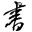

Shared: 605 tabs
Scan this QR code using the Barcode Scanner app on your mobile or tablet
About OneTab
中断线程 - 廖雪峰的官方网站
[OSQWRREL-16251] 【X6812-H6912】【MTK】[X6812][Overseas]-KH2-Clock-10 Unicode Translation Issue - Transsion R&D Center JIRA
(72条消息) 记录java.lang.IllegalMonitorStateException错误,分析Object中wait()和notify()方法含义_flower的博客-CSDN博客
Java主线程等待子线程的几种方法 - 简书
Java Collections Framework Cheat Sheet
在线P图 - Google 搜索
【在线PS软件】在线PS图片（照片）处理工具_在线制作编辑图片ps精简版
【图片编辑器】-在线照片编辑-贴图加水印-稿定设计
【在线拼图软件】免费在线拼图神器，轻松搞定照片图片拼图制作！
如何在图片上内嵌图片 - Google 搜索
Collection - ArrayList 源码解析 | Java 全栈知识体系
三大性质总结：原子性，有序性，可见性 - 简书
xiayitian1003/JCFInternals: 深入理解Java集合框架
java transient - Google 搜索
Change I89abfdf1: BUG ID:OSBRREL-5154 DESCRIPTION:更新版本号至8.6.2.90 BUG ID:OSBWREL-569 DESCRIPTION:添加铃声插入功能 BUG ID:OSBRREL-5154 DESCRIPTION:解决官方缅甸语翻译问题 BUG ID:OSBWDEV-2183 DESCRIPTION:更正新增的xml文件名为原生文件名 BUG ID:OSBWDEV-2183 DESCRIPTION:解决时钟小部件在桌面显示有锯齿感，不清晰的问题 BUG ID:OSBWDEV-220 | gerrit-os.transsion Code Review
TranssionDeskClock_BUILD [Jenkins]
Change I6947ff87: BUG ID:OSBWREL-569 DESCRIPTION:添加铃声插入功能 BUG ID:OSBRREL-5154 DESCRIPTION:解决官方缅甸语翻译问题 BUG ID:OSBWDEV-2183 DESCRIPTION:更正新增的xml文件名为原生文件名 BUG ID:OSBWDEV-2183 DESCRIPTION:解决时钟小部件在桌面显示有锯齿感，不清晰的问题 BUG ID:OSBWDEV-2204 DESCRIPTION:更新版本：8.6.3.15 BUG ID:OSBWDEV-2204 | gerrit-os.transsion Code Review
ADB 关机 - Google 搜索
(71条消息) adb命令 关机与重启_hnlgzb的专栏-CSDN博客_adb 关机命令
博客后台 - 博客园
JAVA集合练习题 - Google 搜索
Java——集合(练习题) - 华为云
(71条消息) OJ+java入门级练习题_redOrange_的博客-CSDN博客
计蒜客 - 编程成长更快乐，信息学选计蒜客
《Java练习题》Java进阶练习题（四） - 加速丨世界 - 博客园
Commits · xiayitian1003/CODER
散列表 - 维基百科，自由的百科全书
(10 封私信 / 80 条消息) 什么是 hash？ - 知乎
(70条消息) Java集合之一—HashMap_深入浅出学JAVA-CSDN博客_hashmap
My Reviews | gerrit-os.transsion Code Review
JAVA多线程讲的最好的书 - Google 搜索
推荐几本 Java 并发编程的书 - "地瓜哥"博客网
(10 封私信 / 80 条消息) 有什么好的并发书籍推荐？ - 知乎
如何学习Java多线程 - 知乎
还搞不定Java多线程和并发编程面试题？你可能需要这一份书单！ - 云+社区 - 腾讯云
[OSBWDEV-2183] 【8.6.3.12】【测试】时钟小部件在桌面显示有锯齿感，不清晰 - Transsion R&D Center JIRA
添加多密度矢量图形 | Android 开发者 | Android Developers
My Reviews | gerrit-os.transsion Code Review
历史记录
矢量可绘制对象概览 | Android 开发者 | Android Developers
(69条消息) Android Vector详解_huanglei201502的博客-CSDN博客
Android Vector曲折的兼容之路 - 简书
Android 的 Vector - 掘金
[OSBWDEV-2131] 【8.5&8.0共性】【必现】【REL】【Clock】锁屏界面定时器界面，点击退出按钮无点击效果 - Transsion R&D Center JIRA
历史记录
xiayitian1003/CODER: CODE
git push参数 - 鬼手渔翁 - 博客园
android xml属性详解 - Google 搜索
Android中View自定义XML属性详解以及R.attr与R.styleable的区别 - 简书
Android XML 属性 - 掘金
Android的XML属性中的问号（？）
(69条消息) Android -- 自定义 View XML属性详解_一只驴在敲代码-CSDN博客_android view xml
(69条消息) Android 控件xml属性详解_achellies's Blog-CSDN博客
android:fillColor selector - Google 搜索
Android: How to change android:fillcolor with selector in one Vector Drawable xml - Stack Overflow
android:state_pressed - Google 搜索
Android之selector - 简书
安卓的颜色教程 - Google 搜索
(69条消息) Android颜色全解析_mLuoya的博客-CSDN博客
(69条消息) Android颜色对照表_从零开始-CSDN博客_android浅灰色
ANDROID strokeColor - Google 搜索
(69条消息) Android开发笔记（一百三十二）矢量图形与矢量动画_aqi00的博客-CSDN博客
[OSBRREL-5165] 【X663-H6915】【MTK】[X663][Overseas]-KH2-Clock-4 Zawgyi Translation Issue - Transsion R&D Center JIRA
[OSBRREL-5154] 【X663-H6915】【MTK】[X663][Overseas]-KH2-Clock-8 Unicode Translation Issue - Transsion R&D Center JIRA
[OSBRREL-5154] 【X663-H6915】【MTK】[X663][Overseas]-KH2-Clock-8 Unicode Translation Issue - Transsion R&D Center JIRA
用户信息: mingying.chen(陈明英) - Transsion R&D Center JIRA
[OSBRREL-4876] 【X697-X698-Public】【MTK】[X697][Overseas]-KH2-Clock-5 Unicode Translation Issue - Transsion R&D Center JIRA
[OSBRREL-4963] 【X689F-H6510】【MTK】【重庆团队】【clock】库尔德语下，时钟里面的时区未翻译，未和设置统一，请修改 - Transsion R&D Center JIRA
匹配规则 - 廖雪峰的官方网站
(9 封私信 / 80 条消息) 好的JAVA集合讲解课程 - 搜索结果 - 知乎
如何在github上新建仓库存放练习代码 - Google 搜索
(68条消息) github上用一个仓库存放多个项目_Charles_ke的博客-CSDN博客
xiayitian1003/CODER
git https绑定仓库 - Google 搜索
Git - 协议
Git - 远程仓库的使用
git如何通过http连接github - Google 搜索
git - GitHub Error - "ssh: connect to host github.com port 22: Operation timed out fatal: Could not read from remote repository." - Stack Overflow
GitHub
设置 - 密码
localhost:6223/?code=74f8545bfcced6430a85&state=0029955fa5fc48cab29d42ceffc5bb16
(67条消息) Android进阶——Preference详解之Preference系的基本应用和管理(二)_最美不过，心中有梦，身旁有你！-CSDN博客
[OSBRREL-4963] 【X689F-H6510】【MTK】【重庆团队】【clock】库尔德语下，时钟里面的时区未翻译，未和设置统一，请修改 - Transsion R&D Center JIRA
[OSBRREL-4876] 【X697-X698-Public】【MTK】[X697][Overseas]-KH2-Clock-5 Unicode Translation Issue - Transsion R&D Center JIRA
[OSBWDEV-2028] 【8.5&8.0共性】【时钟】【REL】【必现】长按闹钟\时区，点击删除同时取消选择，可以点击删除，删除无效果 - Transsion R&D Center JIRA
jira.transsion.com/secure/attachment/1277938/mmexport1630464746554.mp4
Utils.java | gerrit-os.transsion Code Review
Change I69f449a4: BUG ID:OSBWDEV-1890 DESCRIPTION:解决定时器编辑界面，定时器名称输入空格后面跟文字，确定后空格消失的问题 | gerrit-os.transsion Code Review
历史记录
Change Iace99223: BUG ID:OSBWDEV-1866 DESCRIPTION:优化连续点击问题 | gerrit-os.transsion Code Review
Metatech. The X Files of X Files. Research on Aliens, Reptilians, Time Travel, Paranormal, Metaphysical Abilities and Advanced Science.
Metatech.org (metatechorg) - 个人资料 | Pinterest
三顾
Java学习笔记—— finalize() 方法 - 掘金
Log in - Transsion R&D Center JIRA
[OSBWREL-3478] 【CG6&CG6j-H696-R2S】【MTK】[Overseas][Indonesia] - Clock - 2 Indonesia Translation Issue - Transsion R&D Center JIRA
[OSBWDEV-1890] 【OS8.5】【时钟】【REL】【必现】【8.0&8.5共性】定时器编辑界面，定时器名称输入空格后面跟文字，确定后空格消失 - Transsion R&D Center JIRA
translationwebvue
www.google.com
My Reviews | gerrit-os.transsion Code Review
TranssionDeskClock_BUILD [Jenkins]
Jenkins详细教程 - 简书
Docker 教程 | 菜鸟教程
is:closed (owner:self OR reviewer:self) | gerrit-os.transsion Code Review
https://liaoxuefeng.gitee.io/resource.liaoxuefeng.com/git/git-cheat-sheet.html#

git cherry-pick 教程 - 阮一峰的网络日志
[OSBWDEV-1751] 【OS8.5】【时钟】【REL】【8.0&8.5共性】【必现】穆斯林闹钟的时间条只能滑动，点击无效 - Transsion R&D Center JIRA
历史记录
[OSBWDEV-1967] 公共控件2.0版本升级 - Transsion R&D Center JIRA
「解決問題」用solve定resolve？一分鐘搞清楚兩個詞嘅區別 | Wall Street English
gerrit新用户基本操作指引 - SCM - Confluence
TranssionDeskClock_BUILD [Jenkins]
Project OSS/vendor/tran_os/packages/apks | gerrit-os.transsion Code Review
系统产品部深圳端 OS8.5 - Transsion R&D Center JIRA
My Reviews | gerrit-os.transsion Code Review
git如何查看远程所有分支 - Google 搜索
(64条消息) git 查看远程分支、本地分支、创建分支、把分支推到远程repository、删除本地分支_arkblue的专栏-CSDN博客_git 本地分支 远程分支
Project APK/TranssionDeskClock | gerrit-os.transsion Code Review
MiddleSeekBar.java | gerrit-os.transsion Code Review
Change Ie8d657fb: BUG ID:OSQWRREL-15973 DESCRIPTION:修改葡萄牙翻译问题 | gerrit-os.transsion Code Review
My Reviews | gerrit-os.transsion Code Review
安装Git - 廖雪峰的官方网站
[OSBWDEV-1751] 【OS8.5】【时钟】【REL】【8.0&8.5共性】【必现】穆斯林闹钟的时间条只能滑动，点击无效 - Transsion R&D Center JIRA
gerrit新用户注册 - SCM - Confluence
00 新员工环境及配置 - SCM - Confluence
git commit --amend - Google 搜索
OneTab shared tabs
motionevent的index概念 - Google 搜索
MotionEvent | Android Developers
Android MotionEvent详解 - 简书
安卓自定义View进阶-MotionEvent详解
GcsSloop (sloop)
rectf.offset - Google 搜索
android onSizeChanged - Google 搜索
(64条消息) 自定义view中onSizeChanged、onFinishInflate方法调用时机_Code & Data & Finance-CSDN博客
Android 自定义View(二) onSizeChanged、onDraw、onMeasure顺序 - 天涯海角路 - 博客园
OneTab shared tabs
OnClickListener&onTouchEvent事件 - 简书
OneTab shared tabs
OneTab shared tabs
Android:触摸事件的传递机制 - 简书
Android触摸事件传递机制，这一篇就够了 - Joyfulmath - 博客园
Android触摸事件传递机制 | Deep into Android
Android事件分发机制详解：史上最全面、最易懂 - 简书
Android MotionEvent详解 - 简书
程序员历小冰 - 简书
图解Android事件传递之View篇 - 简书
(64条消息) 【Java基础-3】吃透Java IO：字节流、字符流、缓冲流_云深不知处-CSDN博客
Android触摸事件传递机制 - 云+社区 - 腾讯云
View的事件分发机制 - 简书
OnTouchListener, OnClickListener, OnLongClickListener - Google 搜索
(63条消息) Android OnTouchEvent, onClick, onLongClick调用机制_hello0370的专栏-CSDN博客
dispatchtouchevent返回值 - Google 搜索
(64条消息) Android中的dispatchTouchEvent()、onInterceptTouchEvent()和onTouchEvent()_xyz_lmn的博客-CSDN博客
为什么dispatchTouchEvent返回false - Google 搜索
你真的搞懂了事件分发？
(62条消息) Android进阶知识（九）：View的滑动和弹性滑动_快乐肥柴的博客-CSDN博客
(62条消息) Android进阶_快乐肥柴的博客-CSDN博客
(62条消息) Android进阶知识（十）：View的事件分发机制_快乐肥柴的博客-CSDN博客
View的滑动之瞬间滑动与弹性滑动_wjconn的博客-程序员宅基地 - 程序员宅基地
Android MotionEvent详解 - 简书
MotionEvent | Android 开发者 | Android Developers
触摸事件传递机制 - Google 搜索
Android触摸事件传递机制 | Deep into Android
Android触摸事件传递机制，这一篇就够了 - Joyfulmath - 博客园
Android:触摸事件的传递机制 - 简书
Android触摸事件传递机制 - 云+社区 - 腾讯云
translationX - Google 搜索
Android - 区分 View 的 translationX、Y ， X、Y 和 Left、Top，Right、Bottom - 简书
coke613 - 简书
View的事件分发机制 - 简书
OnClickListener&onTouchEvent事件 - 简书
消息 - 简书
android seekbar - Google 搜索
2.3.8 SeekBar(拖动条) | 菜鸟教程
ProgressBar | Android Developers
(62条消息) Android 拖动条SeekBar的简单使用_Angelica-CSDN博客_android seekbar
seekbar - Google 搜索
2.3.8 SeekBar(拖动条) | 菜鸟教程
拖动条(SeekBar)使用 - 云+社区 - 腾讯云
Android中SeekBar拖动条使用方法详解-云海天教程
Adb使用教程，看了教程后你也是玩机达人啦 - 知乎
adb 使用教程 -- adb命令 - 简书
(62条消息) adb使用-详细教程（Awesome Adb）_Deryou的博客-CSDN博客_adb使用教程
第一章 基础算法（二） - AcWing
【算法】希尔排序学习笔记 - 外婆的 - 博客园
AcWing 793. 高精度乘法 - AcWing
793. 高精度乘法 - AcWing题库
Java中Vector和ArrayList的区别 - 一沙鸥 - 博客园
BigInteger - 廖雪峰的官方网站
(62条消息) OnItemClickListener中OnItemClickListener参数详解_叔叔有糖吃的专栏-CSDN博客
AdapterView.OnItemClickListener | Android 开发者 | Android Developers
[OSBWDEV-1751] 【OS8.5】【时钟】【REL】【8.0&8.5共性】【必现】穆斯林闹钟的时间条只能滑动，点击无效 - Transsion R&D Center JIRA
最佳实践 - 廖雪峰的官方网站
[OSQWRREL-14757] 【KG8-H698】【MTK】CLONE - 【重庆团队】【clock】阿拉伯语下，计时结束未翻译 - Transsion R&D Center JIRA
(60条消息) Android Studio Build Output 栏内汉字出现乱码的解决方案_沃克哈德の博客-CSDN博客
(60条消息) apk签名冲突 与旧版不同解决办法 apk签名比对_gediseer的博客-CSDN博客
(60条消息) Android studio 如何查看当前git 分支的4种方式_赵彦军-CSDN博客
(60条消息) Android Studio如何查看自己当前在哪个branch工作？_hyr83960944的专栏-CSDN博客
项目管理系统
android - Install an apk file from command prompt? - Stack Overflow
android如何实现多国语言 - Google 搜索
支持不同的语言和文化 | Android 开发者 | Android Developers
Android国际化(多语言)实现，支持8.0
(60条消息) [Android]简单易用，教你一步实现多国语言翻译_H_O_W_E的专栏-CSDN博客
Android Studio国际化多语言String文件一键翻译插件
历史记录
translationwebvue
extends通配符 - 廖雪峰的官方网站
118 | 泛型简析（上）
setupWithViewPager可以不用吗 - Google 搜索
使用TabLayout看这篇就够了 - 云+社区 - 腾讯云
TabLayout高端用法（二） - 简书
JAVA中父类型指针调用子类方法 - Google 搜索
java泛型中<?>和<T>有什么区别？ - SegmentFault 思否
(59条消息) java 泛型详解-绝对是对泛型方法讲解最详细的，没有之一_s10461的博客-CSDN博客_泛型
JAVA泛型讲的最好 - Google 搜索
(6 封私信 / 80 条消息) 学习 Java 泛型有没有精华的材料、好的学习方法？ - 知乎
一文带你看懂java 泛型，史上最全面的泛型教学啦。 - 知乎
什么是泛型 - 廖雪峰的官方网站
extends通配符 - 廖雪峰的官方网站
历史记录
getLayoutParams - Google 搜索
(57条消息) android getLayoutParams介绍和区别_太伯爵的博客-CSDN博客_android getlayoutparams
(57条消息) Android obtainStyledAttributes获取属性值_FengShanChuiChui的博客-CSDN博客_android obtainstyledattributes
(57条消息) obtainStyledAttributes深入理解_记录所学所思-CSDN博客_obtainstyledattributes
typedArray.getDrawable用法 - Google 搜索
android - 如何使用TypedArray获取Drawable(具有drawable别名) - IT工具网
(57条消息) Android Fragment完全解析，关于碎片你所需知道的一切_郭霖的专栏-CSDN博客
(57条消息) Android Fragment 真正的完全解析（上）_Hongyang-CSDN博客_android fragment
Android基础：Fragment，看这篇就够了 | xiazdong
Fragment 管理器 | Android 开发者 | Android Developers
Fragment lifecycle | Android 开发者 | Android Developers
Fragment 管理器 | Android 开发者 | Android Developers
历史记录
Projects | gerrit-os.transsion Code Review
Git拉取远程最新代码，并与当前分支合并 - 简书
SDK location not found. Define location with an ANDROID_SDK_ROOT environment variable or by setting the sdk.dir path in your project's local properties file at 'D:\CODE\codestore\TranssionSoundRecord\local.properties'. - Google 搜索
(57条消息) Android Studio 导入项目时遇到sdk location not found错误，如何解决_葛明的博客-CSDN博客
git branch -v - 国内版 Bing
fatal: A branch named 'master' already exists. - 国内版 Bing
Git: fatal: A branch named 'master' already exists - Stack Overflow
git切到分支后为什么还要pull - 国内版 Bing
(57条消息) git操作之pull拉取远程指定分支以及push推送到远程指定分支_醉逍遥neo的博客-CSDN博客_git pull 指定分支
git clone之后为什么还要pull_百度搜索
(57条消息) git clone后，在本地切换到远程仓库的非master分支_偕臧-CSDN博客
(57条消息) git clone与git pull区别_555路过555-CSDN博客
AndroidStudio使用Git进行版本回滚 - 简书
版本回退 - 廖雪峰的官方网站
(57条消息) git Unstaged changes after reset_种德养心-CSDN博客
Tablayout使用全解，一篇就够了 - 简书
(57条消息) Android控件-TabLayout使用介绍_csdnxia的博客-CSDN博客_android tablayout
tablayout viewpager - Google 搜索
AndroidX TabLayout使用、扩展及解析All In One
(57条消息) Android框架之路——Tablayout+ViewPager+Fragment的使用_等一杯咖啡的博客-CSDN博客
PagerAdapter | Android Developers
ViewPager使用详解(一):PagerAdapter - 简书
viewpager,frament,pageradater之间的关系 - Google 搜索
(57条消息) Android——ViewPager、PagerAdapter、Fragment(State)PagerAdapter的关系与区别_wuseyukui的专栏-CSDN博客
PagerAdapter和FragmentPagerAdapter和FragmentStatePagerAdapter的区别 - 简书
tablayout + viewpager - Google 搜索
(57条消息) Android框架之路——Tablayout+ViewPager+Fragment的使用_等一杯咖啡的博客-CSDN博客
TabLayout 和 ViewPager - Google 搜索
Create swipe views with tabs using ViewPager | Android Developers
170 | 结课测试&结束语
中的静态声明非法 修饰符 'static' 仅允许在常量变量声明中使用 - Google 搜索
只有在常量变量声明中才允许修饰符静态。 - 问答 - 云+社区 - 腾讯云
外部类.this - Google 搜索
(57条消息) 内部类的.this和.new_小白-CSDN博客_内部类this
Local variable is redundant java - Stack Overflow
Tablayout使用全解，一篇就够了 - 简书
(57条消息) 局部内部类为什么只能访问final局部变量？_Rebirth_Love的博客-CSDN博客_为什么局部内部类只能访问final
历史记录
(57条消息) Java或Android变量名前是否加m的规则_hust_twj的专栏-CSDN博客
(57条消息) View，Widget，Layout，Window，Activity之间的关系_山不在高，有金则名-CSDN博客
底层剖析 Window 、Activity、 View 三者关系 - 帅气的码农 - 博客园
compileSdkVersion、targetSdkVersion以及minSdkVersion三者关系-云社区-华为云
WmS详解(二)之如何理解Window和窗口的关系？基于Android7.0源码-云社区-华为云
(57条消息) viewpager+fragment学习笔记_江南一点雨的专栏-CSDN博客
什么是函数的回调 - Google 搜索
(3 封私信 / 67 条消息) 回调函数（callback）是什么？ - 知乎
从小白到高手，你需要理解同步与异步 - 知乎
从小白到高手，你需要理解同步与异步(内含10张图)
大神博客 - 冬甲地 - 博客园
同步的回调函数 - 国内版 Bing
Activity 简介 | Android 开发者 | Android Developers
2.1.1 View 与 ViewGroup - 简书
Tablayout使用全解，一篇就够了 - 简书
running-libo/TablayoutUseCase: Tablayout所有使用场景，包括修改指示线长度、设置自定义图标、可滚动
(57条消息) Android控件-TabLayout使用介绍_csdnxia的博客-CSDN博客_android tablayout
TabLayout | Android Developers
AndroidX TabLayout使用、扩展及解析All In One
TabLayout使用指南 - 云+社区 - 腾讯云
java - How to use TabLayout with ViewPager2 in Android - Stack Overflow
历史记录
Tablayout - Google 搜索
removeCallbacks - 国内版 Bing
(57条消息) Android 中的postDelayed的用法_shenshizhong的专栏-CSDN博客_android postdelayed
removeCallbacks与postDelayed的 - Google 搜索
java - 为什么将removeCallbacks()与postDelayed()一起使用？ - IT工具网
snackbar.setAction - 国内版 Bing
Snackbar - 简书
view.getResources().getText(resId) - 国内版 Bing
Android - Context中的getText(int resId)方法和getString(int resId)方法的区别 - 尹佳玮 - 博客园
(57条消息) android 中的一些资源注解，让编译器帮你检查代码_nathan柠檬的博客-CSDN博客
(57条消息) Android ActionBar完全解析，使用官方推荐的最佳导航栏(上)_郭霖的专栏-CSDN博客
不兼容的类型: android.widget.Toolbar无法转换为androidx.appcompat.widget.Toolbar - Google 搜索
历史记录
(57条消息) Android系列Viewpager+Fragment 优化之懒加载（预加载）的实现_lixiaolu1994的博客-CSDN博客_android viewpager懒加载
(57条消息) 使用LazyViewPager，实现完整的懒加载ViewPager_May-gemini的博客-CSDN博客
高效源于协同 - 夏乙天
AcWing
安卓中dev和exp - 国内版 Bing
oracle中exp,imp的使用详解 - 不远道人 - 博客园
Anchor - 国内版 Bing
Anchor（英语单词）_百度百科
大咖进化论_百度百科
(57条消息) Android Studio光标返回上一次浏览的位置_砖业洋__-CSDN博客_android studio 返回上一步
(57条消息) Android ActionBar完全解析，使用官方推荐的最佳导航栏(上)_郭霖的专栏-CSDN博客
设置应用栏 | Android 开发者 | Android Developers
androidx Toolbar - 国内版 Bing
(57条消息) androidx使用Toolbar_龙在翔的博客-CSDN博客
Tablayout - 国内版 Bing
android studio values values-night - 国内版 Bing
(57条消息) Android最简单实现日夜间模式切换_王志伟的博客-CSDN博客
colorOnPrimary - 国内版 Bing
Android中?attr/colorOnPrimary的使用 - 知乎
daynight和light区别 - 国内版 Bing
Android夜间模式 - DayNight Mode的使用 - 简书
android studio输出中文乱码 - 国内版 Bing
(57条消息) Android Studio Build Output 栏内汉字出现乱码的解决方案_沃克哈德の博客-CSDN博客
Google Chrome 网络浏览器
AIDL - 国内版 Bing
Android 接口定义语言 (AIDL) | Android 开发者 | Android Developers
Android中AIDL的使用详解 - 简书
Android AIDL使用详解 - 简书
Android进程间通信 深入浅出AIDL - 知乎
AllInOne/AidlActivity.kt at master · xfhy/AllInOne
android项目中module - 国内版 Bing
Android中module怎么用？_Errol's Blog-CSDN博客
安卓开发艺术探索第二版 - 国内版 Bing
(2 封私信 / 82 条消息) 《Android开发艺术探索》值得买吗？ - 知乎
(56条消息) 《Android开发艺术探索》图书勘误_singwhatiwanna-CSDN博客
xiayitian1003/DevBooks: 开发相关电子书籍(PDF)，目前主要是Android开发，其次包含：Kotlin、Java、网络等
《Android群英传》PDF版本下载 - 小木人印象
Samples | Android Developers
android/views-widgets-samples: Multiple samples showing the best practices in views-widgets on Android.
android/user-interface-samples: Multiple samples showing the best practices in the user interface on Android.
Android
历史记录
(54条消息) Java 之 Serializable 序列化和反序列化的概念,作用的通俗易懂的解释_请叫我大师兄-CSDN博客_序列化的概念
(55条消息) 请叫我大师兄_请叫我大师兄__CSDN博客-java,intellij idea,spring领域博主
Java serialVersionUID 有什么作用？ - 简书
Parcelable - Google 搜索
Parcelable | Android Developers
(55条消息) android开发之Parcelable使用详解_江南一点雨的专栏-CSDN博客
详细介绍Android中Parcelable的原理和使用方法 - 简书
writeParcelable含义 - 国内版 Bing
【Android - IPC】之Serializable和Parcelable序列化 - ITGungnir - 博客园
writeParcelable函数介绍 - Google 搜索
Java Parcel.writeParcelable方法代碼示例 - 純淨天空
Parcel | Android Developers
将Parcelable的子类写入另一个Parcel - 问答 - 云+社区 - 腾讯云
Parcelable 和 Bundle | Android 开发者 | Android Developers
adb使用 - 国内版 Bing
adb的使用（基础篇） - 简书
taskAffinity - Google 搜索
(54条消息) 彻底明白Activity启动模式-SingleTop、SingleTask、SingleInstance具体使用场景_我早就想，要这样载着你，翻山越岭-CSDN博客_singleinstance场景
Activity 的 4 种启动模式 · 笔试面试知识整理
Android 启动模式和 taskAffinity 属性详解 - 简书
安卓面经 - 国内版 Bing
Android 面经分享：面试了9家公司，我总结了这些需要注意的技术点 - 云+社区 - 腾讯云
TCP/IP · Android校招面试指南
Android如何重写application - 国内版 Bing
(54条消息) android开发之重写Application类_左撇子的专栏-CSDN博客
(54条消息) 注意！关于怎么理解 onStart可见但不可交互，程序员千万不要小瞧了这个问题，涉及面很多！_YoungOne2333的博客-CSDN博客
Android群英传pdf电子书下载-码农书籍网
下载内容
java - Attempt to invoke virtual method 'void android.widget.Button.setOnClickListener(android.view.View$OnClickListener)' on a null object reference - Stack Overflow
onrestoreinstancestate什么时候调用 - 国内版 Bing
(54条消息) Android onSaveInstanceState()和onRestoreInstanceState()调用时机_风行天下-CSDN博客_android onrestoreinstancestate
Android DecorView学习 - 简书
(54条消息) android 中theme.xml与style.xml的区别_xiyangyang8的专栏-CSDN博客
Android:自定义view之onMeasure - 简书
(54条消息) Android视图绘制流程完全解析，带你一步步深入了解View(二)_郭霖的专栏-CSDN博客_view的绘制流程郭霖
canvas和ondraw - Google 搜索
Android View绘制（四）onDraw过程与Canvas Bitmap | viseator's blog
分类: Android | viseator's blog
Android View绘制（一）生命周期总览 | viseator's blog
课程介绍，Andriod中的马大姐与周大嘴ContentProvider与BroadcastReceiver教程-慕课网
课程介绍，Android实现跨进程通信教程-慕课网
自定义实现日历控件-慕课网
android中xml的style - Google 搜索
Android XML(1)| styles.xml - 简书
样式和主题背景 | Android 开发者 | Android Developers
View | Android Developers
(54条消息) Android Style.xml 详解_花不掉泪的博客-CSDN博客_android style.xml
xml style支持的属性 - 国内版 Bing
(54条消息) Android的xml文件中的theme和style属性的区别与联系；style、declare-styleable、attr这三个标签的区别与联系_cheneasternsun的博客-CSDN博客
(54条消息) android使用setTheme的方式实现主题切换_Wood的专栏-CSDN博客
startActivityForResult - 国内版 Bing
startActivityForResult用法 - 简书
andorid listactivity - 国内版 Bing
(54条消息) 安卓-ListActivity的使用_淡淡的幸福的博客-CSDN博客_android listactivity
(54条消息) 安卓-ListActivity的使用_淡淡的幸福的博客-CSDN博客_android listactivity
ArrayAdapter - 国内版 Bing
Android之ArrayAdapter详解 - 简书
android adapter - Google 搜索
2.4.4 Adapter基础讲解 | 菜鸟教程
Android inflate方法总结 - 简书
android adapter - 国内版 Bing
Android之Adapter用法总结 - Devin Zhang - 博客园
android resources xml - 国内版 Bing
(54条消息) Android学习笔记（三八）：资源resource（上）、XML解析（XmlPullParser）_愷风（Wei）的专栏-CSDN博客
android studio xml中item的意思 - 国内版 Bing
(54条消息) Android资源文件中各种XML的作用与解释_高速蜗牛的博客-CSDN博客_安卓xml文件
android中resource资源文件 - Google 搜索
(54条消息) Android资源文件夹及资源文件的详细介绍_MingChao_Sun-CSDN博客_android 资源文件
历史记录
AcWing
JAVA有函数指针吗 - 国内版 Bing
(54条消息) Java 中的“函数指针”_HouZhipeng 的专栏-CSDN博客_java 函数指针
安卓如何获取drawable的view - 国内版 Bing
(54条消息) android获取drawable图片的id和名字的方法_JayGengi的博客-CSDN博客
www.google.com
android studio toast用法 - 国内版 Bing
(54条消息) Android Studio 在活动中使用Toast_u012005313的专栏-CSDN博客_android studio toast报错
(3 封私信 / 71 条消息) redmi airdots3 pro - 搜索结果 - 知乎
android studio中类文件左上角有一个锤子是什么 - 国内版 Bing
2021年有哪些打电话/语音/通话质量好的真无线蓝牙/TWS耳机？评测与推荐,8月更新 - 知乎
CheckBox.setVisibility - 国内版 Bing
(54条消息) android api 中setVisibility( )的用法（可显示或隐藏布局或控件...）_llixiangjian的博客-CSDN博客
"oncreate" 的搜索结果 | 安卓开发者
在线翻译_有道
查询商品历史价格走势（支持京东，天猫，淘宝等）APP - 慢慢买
查询商品历史价格走势（支持京东，天猫，淘宝等）APP - 慢慢买
Android application - Google 搜索
Application | Android 开发者 | Android Developers
动态设置textview内容setText - 国内版 Bing
(54条消息) TextView动态改变显示的内容_狂健小夫的博客-CSDN博客_改变textview内容
android如何更改当前gradle版本 - 国内版 Bing
AcWing
下载内容
oncheckboxclicked - Google 搜索
ListView和RecycleView - Google 搜索
Android ListView与RecycleView的对比使用解析 - 云+社区 - 腾讯云
Index of /ubuntu-releases/20.04.2.0/ | 清华大学开源软件镜像站 | Tsinghua Open Source Mirror
Ubuntu vmware安装教程 - 国内版 Bing
131 | 网络通讯名词简介
okhttp和socket的区别 - 国内版 Bing
(54条消息) OkHttp中的Socket连接_厚德出品，必是精品-CSDN博客_okhttp socket
vmware workstation中文设置 - 国内版 Bing
(54条消息) 如何将VMware workstation软件的语言切换成中文_Sz刘欢欢的博客-CSDN博客_vmware界面转换成中文
(54条消息) VMware Workstation 15 界面语言改成中文或其他语言的方法_shenjingqq的博客-CSDN博客_vmware中文设置
(54条消息) VMware Workstation 15 界面语言改成中文或其他语言的方法_曾曾曾植树的博客-CSDN博客_vmware设置中文
win 10重启如何进入BIOS - 国内版 Bing
win10如何进入bios - 装机吧
(54条消息) LINUX安装虚拟机时安装步骤和进入bios解决intel vt -x_SmallIPPig的博客-CSDN博客
一般的网页服务器用什么webserver - 国内版 Bing
(54条消息) java 注解中使用变量_Java中的注解_东奥会计在线的博客-CSDN博客
(54条消息) Android -- 使用OKhttp获取response时遇到的坑_许建波的博客-CSDN博客
communication to 10.0.2.2 not permitted by network security policy - 国内版 Bing
(54条消息) Android P联网报错 :Cleartext HTTP traffic to xxx not permitted的解决方法_xiaoqiang_0719的博客-CSDN博客
android - CLEARTEXT communication not permitted by network security policy working on my mobile - Stack Overflow
android okhttp3 https协议访问失败 - 国内版 Bing
(54条消息) 使用OkHttp3网络请求的错误解析_qq_30651537的博客-CSDN博客_okhttp 错误码
Android安全开发之安全使用HTTPS - 阿里安全 - 博客园
chromium: [ERROR:gl_surface_egl.cc(549)] eglChooseConfig failed with error EGL_SUCCESS - 国内版 Bing
ui/gl/gl_surface_egl.cc - chromium/src - Git at Google
安卓访问https - 国内版 Bing
(54条消息) Android访问Https协议的接口_小码哥教育Android学院-CSDN博客_安卓访问https
apache如何支持https协议访问 - 国内版 Bing
Apache配置实现https访问_成长中的强大的技术博客_51CTO博客
win10本地apache如何支持https协议访问 - Google 搜索
(54条消息) windows下配置apache+https_木鱼大叔的技术博客-CSDN博客
https和ssh的关系 - 国内版 Bing
(54条消息) windows下配置apache+https_木鱼大叔的技术博客-CSDN博客
[XLJQGXLJB-2493] 【重庆团队】【共性】【SoundRecorder】隐藏录音后，录音机页面全选按钮未消失 - Transsion R&D Center JIRA
(53条消息) Java创建线程的四种方式_Andy-CSDN博客_java创建线程
Java 多线程编程 | 菜鸟教程
square/okhttp: Square’s meticulous HTTP client for the JVM, Android, and GraalVM.
一文看懂web服务器、应用服务器、web容器、反向代理服务器区别与联系 - 帅虫哥 - 博客园
(53条消息) windows下安装apache_我笔记-CSDN博客_windows安装apache
Apache Haus Downloads
如何在windows下载和安装Apache - 知乎
安卓访问本地apache服务器 - 国内版 Bing
(53条消息) 基于android studio真机连接本地服务器（Apache）详细流程_Android_huishao的博客-CSDN博客
(52条消息) Android 8.0通知栏显示适配（Notification不显示问题）_wangyetongsss的博客-CSDN博客
(53条消息) Android Context 上下文 你必须知道的一切_Hongyang-CSDN博客_context
Android - 认识Context
Android 开发者学习路线(2020 版本) · Android Performance
Flutter 跨平台演进及架构开篇 - Gityuan博客 | 袁辉辉的技术博客
史上最全的Android开发学习教程集锦【初学者】 - 云+社区 - 腾讯云
使用 SQLite 保存数据 | Android 开发者 | Android Developers
AndroidX 概览 | Android 开发者 | Android Developers
java - Error No Activity found to handle Intent act=android.media.action.IMAGE_CAPTURE - Stack Overflow
141 | 同步控制之wait notify
目前有哪些具有性价比优势值得关注的音质耳机真无线蓝牙耳机（降噪耳机）运动蓝牙耳机推荐 - 知乎
Thread interrupt() 线程中断的详细说明 - 陈咬金 - 博客园
Thread的中断机制(interrupt) - 寂静沙滩 - 博客园
Java中的Class类 - 一人浅醉- - 博客园
CRUD - 国内版 Bing
(49条消息) 什么是CRUD？ CRUD的操作_DJyzh的博客-CSDN博客
(49条消息) 什么是CRUD( What is CRUD)?_bruesz的专栏-CSDN博客
android context - 国内版 Bing
Android基础之Context - 简书
(49条消息) Android应用Context详解及源码解析_工匠若水-CSDN博客
registerContentObserver - 国内版 Bing
(49条消息) 通过registerContentObserver(注册监听者)配合URI来实现恶意敏感信息窃取相关_La0sj的博客-CSDN博客
(49条消息) android contentResolver的使用_谢岩的博客-CSDN博客_android contentresolver
(1 封私信 / 69 条消息) 红米k40屏幕好在哪里? - 知乎
(49条消息) android studio默认快捷键_小样儿很萌的博客-CSDN博客
ANDROID回到上一个焦点 - 国内版 Bing
(50条消息) Android Studio光标返回上一次浏览的位置_砖业洋__-CSDN博客_android studio 返回上一步
resolve - 国内版 Bing
【认真脸】请不要再把“resolve”叫做“解析”了！ - 知乎
历史记录
plantuml + graphviz配置 | 有点博客
.puml语法scale用法 - 国内版 Bing
skinparam dpi - Google 搜索
problems with png size or the skinparam - PlantUML Q&A
顺序图的语法和功能
PLANTUML_LIMIT_SIZE - Google 搜索
diagram - Increase graph size in plantUML from python? - Stack Overflow
diagram - Increase graph size in plantUML from python? - Stack Overflow
android studio插件安装目录 - 国内版 Bing
android studio如何设置jvm参数 - 国内版 Bing
Android Studio内存大小的设置啊 - 简书
历史记录
configChanges - 国内版 Bing
(49条消息) 【Android进阶】android:configChanges属性总结_赵凯强-CSDN博客_android:configchanges
getSimpleName - 国内版 Bing
java Class.getSimpleName() 的用法 - petercao - 博客园
android utils是什么 - Google 搜索
(49条消息) Android：常用Utils工具类_HMYANG314的专栏-CSDN博客
activity mWindow - 国内版 Bing
Activity、View、Window的理解一篇文章就够了 - 简书
plantUML 导出的UML图模糊 - 国内版 Bing
(49条消息) plantuml如何导出大图片_SweetTool的专栏-CSDN博客_plantuml导出图片
使用PlantUML绘图
puml文件调节分辨率 - 国内版 Bing
(49条消息) 绘图工具（代码实现绘图）---plantuml_学而不思则罔，思而不学则殆-CSDN博客_plantuml
puml文件调节分辨率 - Google 搜索
119 | 泛型简析（下）
Class类 - 廖雪峰的官方网站
大白话说Java反射：入门、使用、原理 - 陈树义 - 博客园
Java 内部类、静态内部类、匿名内部类 - qlky - 博客园
有什么类似think in java的书 - 国内版 Bing
(1 封私信 / 63 条消息) 关于JAVA的书籍最佳阅读顺序，大家有什么建议？ - 知乎
Java：接口和抽象类，傻傻分不清楚？ - 沉默王二博客
C++和JAVA运行速度 - 国内版 Bing
历史记录
包装类 - 国内版 Bing
廖雪峰JAVA - 国内版 Bing
什么是泛型 - 廖雪峰的官方网站
泛型 - 国内版 Bing
Java 泛型 | 菜鸟教程
JAVA泛型 - Google 搜索
(46条消息) java 泛型详解-绝对是对泛型方法讲解最详细的，没有之一_s10461的博客-CSDN博客_泛型
(46条消息) java 泛型详解-绝对是对泛型方法讲解最详细的，没有之一_s10461的博客-CSDN博客_泛型
臧萌JAVA极客学院 - 国内版 Bing
115 | Collection中的List （上）
JAVA中list.clear - 国内版 Bing
Android的有序广播和无序广播（解决安卓8.0版本之后有序广播的接收问题） - ming3 - 博客园
AcWing
在线编写markdown,预览,导出pdf,word,html,下载md-在线工具-postjson
<activity> | Android 开发者 | Android Developers
Manifest merger failed : Apps targeting Android 12 and higher are required to specify an explicit value for `android:exported` when the corresponding component has an intent filter defined. - Google 搜索
Manifest merger failed targeting Android 12-技术分享-码神部落
android studio build乱码 - 国内版 Bing
android 官方文档pdf下载 - Google 搜索
安卓setOnClickListener - 国内版 Bing
Android Studio 有关 setOnClickListener() 方法的总结 - MElephant - 博客园
匿名内部类 - Google 搜索
傻子都能看懂的匿名内部类 - 简书
JAVA匿名类 - Google 搜索
Java 匿名类 | 菜鸟教程
安卓四大组件与四大布局 - Google 搜索
(44条消息) Android之四大组件、六大布局、五大存储_shenggaofei的博客-CSDN博客_四大组件
(1 封私信 / 81 条消息) 如何通俗地理解 Gradle？ - 知乎
安卓开发最好的入门方式？ - Google 搜索
如何自学 Android 开发？ - 知乎
manifest（安卓开发文件名）_百度百科
Installed Build Tools revision 31.0.0 is corrupted. Remove and install - Google 搜索
java - Android Studio error "Installed Build Tools revision 31.0.0 is corrupted" - Stack Overflow
【panel】什么意思_英语panel的翻译_音标_读音_用法_例句_在线翻译_有道词典
JAVA的super - Google 搜索
Java中this和super的用法总结 - codersai - 博客园
博客后台 - 博客园
GIT - 冬甲地 - 博客园
从远程库克隆 - 廖雪峰的官方网站
(44条消息) GitHub如何配置SSH Key_前端向朔-CSDN博客_github ssh
GIT - 冬甲地 - 博客园
JAVA环境下载配置 - 冬甲地 - 博客园
git怎样通过https访问github仓库 - Google 搜索
关于远程仓库 - GitHub Docs
GitHub
廖雪峰 - 国内版 Bing
创建版本库 - 廖雪峰的官方网站
typora - 国内版 Bing
Typora — a markdown editor, markdown reader.
onetab - 国内版 Bing
OneTab_1.53_chrome扩展插件下载_极简插件
https://chrome.google.com/webstore/detail/onetab/chphlpgkkbolifaimnlloiipkdnihall
扩展程序 - OneTab